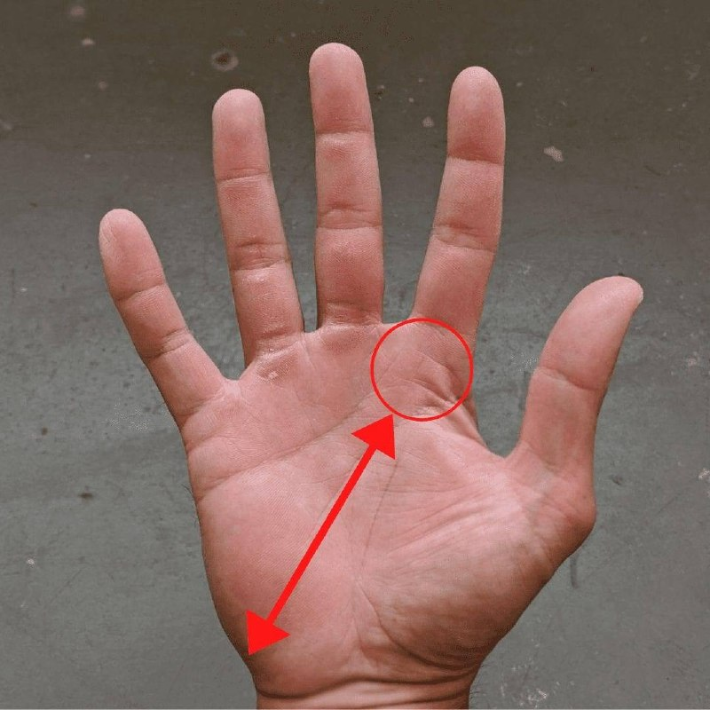
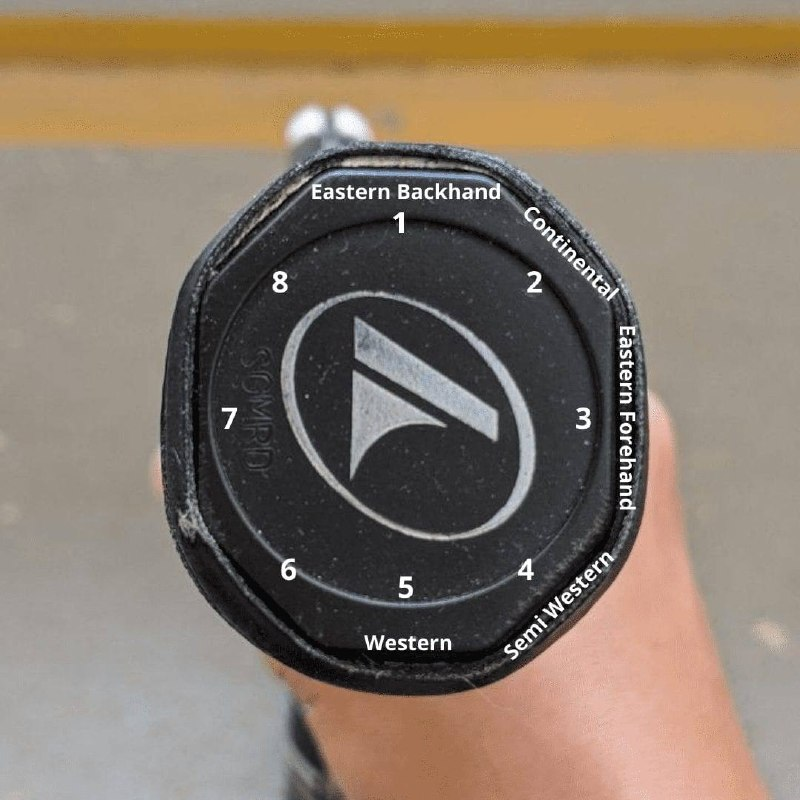

Teknik
Generelle tekniske råd — ketcherbevægelse, balance, fodarbejde og sving.
Ketchergrebet er opdelt i 8 flader (bevels), nummereret fra toppen med urets retning:
- Bevel 1 = Eastern Backhand
- Bevel 2 = Continental (serv, slice, stopbold, overhead)
- Bevel 3 = Eastern Forehand
- Bevel 4 = Semi-Western (standard topspin forhånd)
- Bevel 5 = Western (meget topspin, sjælden)
Håndposition: grebet skal ligge ned mod hælpuden — ikke op i fingrene. Det giver mere frihed i håndleddet og bedre kontrol.


De fleste fejl ryger i nettet, ikke ud. Tommelfingerregel: sigt altid mindst 1 meter over nettet — det giver fejlmargin nedad uden at koste dig for meget dybde.
Under stress begynder mange ubevidst at kigge på modstanderen frem for bolden. Det ødelægger timing og kontaktpunkt.
Konkret cue: hold blikket på bolden helt til kontakt — se den ramme ketcherstrengen.
Et lille hop (split-step) i det øjeblik modstanderen rammer bolden sikrer at du er i balance og klar til at bevæge dig i begge retninger.
Uden split-step er du langsom til siden — med det er du allerede i gang.
Når spillet ikke hænger sammen: overdrive benarbejdet bevidst — tag et ekstra skridt, split-step mere tydeligt, rejs dig højere på tæerne.
Overdrivelse aktiverer kroppen og tvinger dig til at prioritere position frem for slag. Når benene arbejder aktivt, kommer resten af kroppen bedre i balance.
Greb: kontinentalt (som ved slice og serv). Ketcherfladen åben ved kontakt — peger lidt opad, ikke lodret.
Bevægelse: skær ned og under bolden med et fremadgående sving. Det er backspinnet der holder bolden lav — ikke at du slår "blidt". Kontaktpunkt: foran kroppen med god tid.
De to typiske fejl: For kort/net = ketcherfladen for lukket eller for meget nedadgående skær uden fremadrettet kraft. For lang = for meget fremadrettet kraft, for lidt backspin.
Cue: "Skær under og frem" — ikke "slå let".
Ketcherbevægelsen (hele svingen fra lodret til follow-through, uden backswing) skal have konstant høj hastighed uanset om du slår flad eller med topspin.
Det er stien der afgør topspinmængden: ketcheren starter højt, går dybt ned og svinger opad = topspin. Racketfladen ved kontakt: let lukket (peger lidt nedad) ved topspin, flad/lodret ved fladt slag.
Vil du slå blødere eller med mindre risiko: ændr sving-stien — ikke hastigheden. Swoosh-lyden skal altid være der. Gælder både forhånd og baghånd.